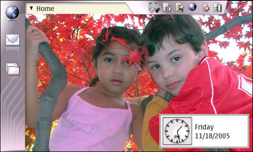
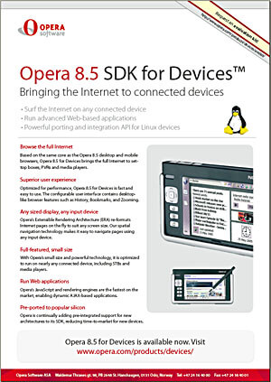
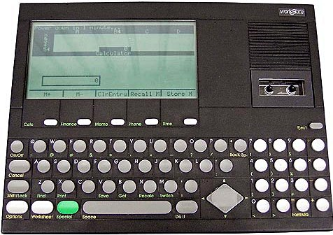
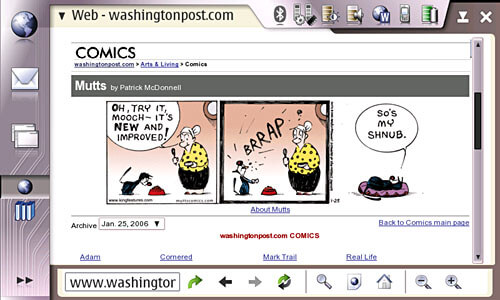

Author Archive for RogerS
Note: Links may not work or may take you to an archived page at the Internet Archive.
By RogerS February 15th, 2006
Categories: Internet tablet, Nokia 770, general, observations and phone
OK, we’re waiting for VoIP. In a discussion
about what we might expect from the next iteration of the Nokia 770, I
said maybe VoIP will be the killer app for a device like the 770.
As I thought about it, I was reminded of two things Ari Jaaksi wrote
about on his blog. First (well, in importance; chronologically it was
second), he reminded us that “the killer app for the internet tablet is the INTERNET.”
The way the 770 interacts with the internet, from displaying web pages
to doing email, is just something that phones are not good at by
themselves.
And “by themselves” I am referring obliquely to the fact that a
Bluetooth phone combined with a 770 provides a different web experience
altogether than a phone alone.
We say, “The internet tablet is about accessing the internet.” And
it’s good to get away from the desk and use the 770 in a meeting room
or in the elevator on the way to the meeting, or at home on the couch
or in bed (or as others have described, as a control device accessing
devices on the network).
But I keep thinking about the day I paired with a BT phone
and surfed all the way into the city on a train and all the way to work
as I walked from the train station to the office. That was different.
That was accessing the internet in a full and complete way, while
I was away from the physical network. Ari wrote about that
experience, saying, “I surf in trains, in cafeterias, at airports, even
while driving. I can go online anytime and anywhere I want.” Just as
cellphones meant voice communication was no longer stationary, he said,
the 770’s release meant that the internet is no longer stationary
either.
The big barrier to fully utilizing the 770 this way isn’t something
Nokia can do anything about. It’s the price of cellphone internet
access. If that were truly affordable, then the true promise of the
internet tablet would be realizable, and we would appreciate, as Ari
says, that the killer app is the internet, anywhere.
By RogerS February 9th, 2006
Categories: Internet tablet, Nokia 770 and keyboard
Not being British, I use the English (US) virtual keyboard, which puts a
plus sign (+) and an equals sign (=) in the two spots next to the zero
in the numeric keypad on the on-screen keyboard.
Choosing English (UK) as your first language in the Text Input
control panel gives you a different keyboard layout, with a hyphen (-)
and an equals sign in those positions, as well as other changes with
the keys shifted. And of course, other language settings have different
characters for other keys as well.
Obviously the virtual keyboard simply uses different mappings for
the different choices. I keep thinking I should be able to change the
English (US) mapping to use a hyphen with the numeric keypad.
Others have explained that
creating a .xmodmap file in /home/user/ lets you remap the keys on a Bluetooth keyboard.
Is there a similar solution to the virtual keyboard mapping? I really, really want that hyphen.
Update: Solution delivered! Timothy provides a detailed explanation in the comments to this blog. Thanks!
Second update: I’ve been practicing the alternative
case gestures, as described in the Maemo Wiki page, HowToInputMethod770,
in section 1.4.1 Gestures, and as MikeB reminded me in a comment to
this blog item. When you press a key, wait a beat, then drag up, you
get the shifted character. This works for =/- as well as for
lower-case/upper-case letters and so on. I’ve been using it for
parentheses and some caps, and it’s great — except that I am only
succeeding about 80 percent of the time.
Apparently when the pressure of my stylus is deemed
inconsistent, the virtual keyboard interprets my “gesture” as a
double-tap and give me two lower-case letters. Meanwhile I’m still
pressing and moving up and then double-deleting and starting over, and
in those cases it’s not faster. I’ll see if I get better at this or if
the keyboard/touchscreen is just too finicky.
By RogerS February 8th, 2006
Categories: Internet tablet, Nokia 770 and python
Wanted
A C and python programmer to do the heavy lifting on a port of the
FBReader source to MS Windows and the creation of a converter from OEB
and OpenReader formats to FB2. Interest in SVG a distinct plus.
• • •
OK, I’m not a programmer, though I’ve managed to say “Hello, World”
in a half-dozen languages. C is not one of those; however, I did
struggle through 41 pages of Kernighan and Ritchie
back in 1981. (I gave up when I couldn’t figure out what they meant
when they said to pop a stack, and no one I asked knew what I was
talking about.)
But I like FBReader
so much I want to get it onto the Windows computer I use daily. And,
more importantly, onto the Windows computers of most everyone I know.
There is no e-reader that spans Windows and Linux, and I hope FBReader
can manage that.
Nicolay Pultsin and Mikhail Sobolev are responsible for creating
FBReader and getting it on the Nokia 770 and the Linux desktop, and
they have their hands full finishing the program. FBReader still needs
bookmark and annotation capabilities, not to mention integrating a
dictionary, adding table support, and reading additional formats.
Rather than get in their way — they’ve been doing pretty well
without me — I’m thinking the best way to boost FBReader is to do what
they can’t or don’t plan to do. Of course, this has the side effect of
boosting the Nokia 770 as FBReader’s prime platform. The combination of
the 770’s display (the pixel density provides for font size control in
one-third-of-a-point increments) and portability with the most capable
and customizable e-reader will be a tipping point in the 770’s favor
when compared to other devices.
One part of making FBReader more accessible is to enable more
e-books to be read on it. Since FBReader does its best work with
e-books in FictionBook 2.0 form, I want to get more e-books into FB2.
And that’s whay I’d like to get a converter written in a cross-platform
language like python (yes, so you can even use it on your 770). Maybe
later on, modules can be written to accept open formats like OEB and OpenReader directly.
And SVG? Just looking down the road. E-readers should be able to handle anything browsers can.
Any programmers out there interested?
By RogerS February 7th, 2006
Categories: Internet tablet, Nokia 770 and general
Reggie posted
the news that in the 2005 Engadget Awards,
the Nokia 770 won both the Reader’s Choice as the 2005 Handheld of the Year, and the Editor’s Pick.
Wow! Congratulations to everyone at Nokia! I can mention Janne
Jormalainen, Ari Virtanen and Ari Jaaksi by name because they’re
upper-enough management for their names to be known, but we know a lot
of people made this happen. They all deserve our appreciation and
thanks, and this award provides us an opportunity to give them that.
Thanks, you guys!
Lots of things go into this. First of all, with as much as they bit
off, the people at Nokia were able to get the 770 delivered in 2005.
Look at Microsoft, which is hoping to get an “ultra-mobile” with
comparable abilities delivered in 2007 for about three times the price
of the 770. Or Sony, hoping to deliver a 2-bit 1-color e-reader without
WiFi or additional apps, removing the pricetag from their website this
week because they can’t meet their same-as-the-770 price. Or the
PepperPad, bigger, heavier, fewer apps, twice the price.
Second, Nokia looked at the Bermuda Triangle of web pads and didn’t
flinch when setting off to build its own internet tablet. Requirements:
Must be super small so people will carry it — pocket size, in fact.
Must fully access the web, which means at least 800 pixels wide (oops,
that makes requirement 1 really hard) and WiFi. Must be affordable
(oops, that directly conflicts requirements 1 and 2).
Third, for all the breadth of its capabilities, the 770 doesn’t try
to do everything. It doesn’t include a phone. No camera. No keyboard or
disk drive either. You don’t need those things for what it does. Nokia
stayed focused on what it was trying to do and didn’t yield to the
more-is-better delusion, like for instance, the OQO.
Fourth, Nokia didn’t try to partition off the 770 but instead placed
it squarely in among the Linux/open-source community. Was this a
separate goal or the lucky consequence of the requirements above? I
don’t know. But either way, belonging to the community instead of
profiting from the community made things signficantly different in
helping the 770 succeed where others had wrecked.
Yes, we’re enthusiasts here at itT, and we’re happy the object of
our fascination has won. It means that others can see this remarkable
confluence of capabilities and recognize what it is too: a handheld
worth celebrating.
By RogerS February 6th, 2006
Categories: Internet tablet, Nokia 770, hardware, keyboard and software
OK, I’ve begun to soup up my Nokia 770. So far I’ve sprung for
a keyboard, 1GB mmc
card and a travel WiFi router;
and now Thoughtfix’s posts on GPS
and Chainsaw76’s map work
have me thinking about a GPS receiver.
Not to mention wanting to upgrade to a Bluetooth phone.
I didn’t think I would want to stretch the 770 in so many ways.
To tell the truth, I started out reluctant to even flash a new
firmware image. It wasn’t till the third image came out that I even did
that. And when I first got my 770, I thought I should restrict myself
to just the built-in apps so as to better understand what the typical
user would experience. That was both a strategy and a tentative
response to a new Linux computer.

Well, that decision lasted about three days. A vanilla 770 isn’t enough.
Actually, the first thing I did with my 770 was to change Home’s
appearance — I looked at the four color schemes, wishing I could build
my own (must be a way to do that), removed the News reader, web
shortcut, and internet radio, and changed the background image to one
of Jayne and Sam perched in the red maple in front of our house. Small
things, completely superficial, and btw springing from the distinct
need to feel I was the master of my Linux destiny.
So, three days in, I began to install and then later to uninstall apps. FBReader and Plucker Viewer came first (naturally, given my bent towards
books — I’ve worked in publishing for my whole career).
Then games,
a lot of them. I’m not really a gamer [1]; but I play a couple and I
sometimes need to engage one of my children so some games are for them.
Installing was easy, and finally I had added more apps to the device
than it had come with. The 770 was beginning to feel like my computer. Of course, I wanted more.
So then came Joe, the text editor,
and vim. What, a text-to-speech
engine? Flite went on.
And Granule for flash cards. The GPE-PIM
trio. Happiest day? When Tomas Frydrych casually let slip how to install fonts.
I put in a dozen I can’t live without (Maiandra, Trebuchet MS, Gardiner’s hieroglyphs).
Comfort food for the eyes: Look, I control how text looks on-screen! I
tried things out, I removed what i wasn’t using.
It didn’t take much encouragment to venture under the hood. I installed XTerm
(had to for the fonts) and did the command-line thing. Sure, it’s not
so daunting, but I really really would like to give up the command
line. I installed the cpu/mem/screenshot applet
in a slight euphoria, because it meant I could take screen captures
without becoming root and going through elaborate contortions that I
didn’t understand (does that old method involve a web server? I still
can’t figure it out). With a steely eye, I put in Midnight Commander
to do simple file management things like move files to a directory hidden from File Manager.
So for the first few months, modifying my 770 meant finding apps
that did neat things I wanted to do. I was pretty content and put some
energy into e-book-building apps on the desktop. I thought I had
everything under control.
Part 2: I learn the reality.
[1] Confession time: All the blog items about games during the long
period before release weren’t about the games — they were about the
screen grabs! We needed pictures! What did things look like? We needed
to see! And lots of games were being ported. Nice thing about it is
that I started reading Marcelo Eduardo’s blog, A Handful
of Nothing, which I really enjoy, and from there a number of other
Brazilian blogs written by INdT developers, including etrunko’s (void *) and
Renato Araujo’s Tux em Recife.
By RogerS February 3rd, 2006
Categories: Internet tablet, Nokia 770 and hardware
I posted the following speculations in the itT thread called “Mike Cane’s
Live 770 Blog”. I’m blogging it here, which will start a new thread
where people can identify their 770’s country of origin, code
(hopefully this will equate to batch number), date of receipt and level
of reliability.
In his forum blog, Mike Cane has detailed the
problems he’s had with his Nokia 770. And I’ve been thinking about
them for some time.
If I had consistently wacky behavior from an application on my PC
that someone else with the identical hardware and software was not
having, I’d suspect a bad install or a bad sector on the hard drive.
I’d uninstall and re-install, and I’d test the drive. Really
unpredictable behavior would lead me to test the RAM too.
Mike wrote that he has re-flashed the most recent image. So a re-install didn’t fix things.
Of course, the 770’s “drive” is its mmc card and half the device’s
flash memory. Is there an application that will test the 770’s memory?
Both the internal and the mmc? Bad memory is usually an infrequent
problem on PC’s, still it does happen.
But if it’s not the install, not the memory, and
not the case that Mike is stressing the software beyond other people’s
use, could it be the manufacturing that’s at fault?
Maybe Mike has a defective 770, or maybe there’s a batch of 770’s
manufactured together in which more defects show up. Does that sound
plausible to anyone? It is a new device, after all. And Mike’s not the
only one who has frequent problems.
So let’s collect some data that would let us know if there’s a pattern to these problems that is manufacturing-based.
Here’s my info:
My 770 was made in Estonia. It has a code of 0631265. (Turn off the
770. Look under the battery. This isn’t the number you use to get
firmware updates.) I got it in mid-November 2005.
And my device has the some flaky crashes, but nothing consistent and
nothing on the frequency that some others report. (And since I’ve used
a swapfile, the crashes are less frequent.)
Please post your info too. Let’s get to the bottom of this if we can.
By RogerS February 1st, 2006
Categories: Internet tablet, Nokia 770 and browser
Ran across this at the Opera site:
“Opera for Devices is a complete suite of Internet
technologies for electronic devices, with innovative and powerful
features that seamlessly adapt the Internet experience to suit varying
screen sizes and input devices. In addition to being a full Internet
browser, Opera is an execution environment for Web applications and
dynamic user interfaces based on interoperable open Web technologies
such as AJAX.
“Opera for Devices is currently being shipped in devices from NDS, Amino, Archos, Nokia….”
Since the blurb goes on to say that Nokia’s use of Opera for Devices
is in addition to the company’s use of Opera on mobile phones, it got
me thinking: Is Opera for Devices the version that’s running on the
Nokia 770? Edited to add: Well the picture to the left answers everything.
The reason I wonder is that Opera for Devices has an SDK available for developers.
Surely from that we non-Nokians/non-Operians might learn something
about improving Opera’s, um, friendliness. Maybe a way to add a plug-in
that worked on the 770 could be brought forward or some features of the
full Opera be restored.
As it is, like some others, I’d love to see more full-Opera
features, as well as being to access its settings via a dialog rather
than backdoor editing of the opera.ini file.
And I know where I’d start, too. Since we’re lacking a presentation
app on the 770 for slideshows, we could really use the slide-by-slide
display that Opera’s full-screen projection mode provides. Looks like a
slideshow, but the file is straight html. What about it?
Edited to add: gultig located this PDF brochure
about Opera for Devices that shows the Nokia 770 on its front page —
yes, that’s it shown above. Looks like this shot in the dark hit the
mark. But now, can we use this information somehow?
By RogerS January 29th, 2006
Categories: Internet tablet, Nokia 770, general and observations

In his blog-style forum thread, Mike Cane’s Live 770 blog, Mike sent
me careering down computer memory lane back to a couple notepads I
owned back in 1983 and ’84, which no one has ever heard of — a
Convergent Technologies Workslate (pictured above) and a Sord IS-11.
Convergent was a high-flying startup that managed to burn through all
its VC money and go broke in a period of two years; Sord was a Japanese
computer company that didn’t make it in the U.S. with its first efforts
and then gave up.
Both computers had small LCD screens, full-sze keyboards and
microcassette storage. The Sord was pretty much a word-processing
device. The Workslate was sort of a dedicated spreadsheet computer —
all its apps used an underlying row-column cell structure. That made
sense for its core spreadsheet app and the financial calculator and
even the phone book. It made for odd text files though. It was intended
for travel all the way and included a built-in modem; you could even
use the tape drive for recording voice memos.
The Workslate had serious design flaws — not only could you not
extend the RAM, you couldn’t extend the apps either: it couldn’t load
any apps at all except those few sorta-spreadsheet adaptations. But it
was sleekly designed, rich black with striking round-topped keys that
lacked the natural utility of normal concave key tops. Convergent must
have designed it for businesspeople who didn’t want to learn how to use
a computer, as though that were a growing instead of shrinking market
back then. The Workslate reminds me actually of this year’s Sony
Reader, another one-trick pony hoping that a single-use computer can
win people over by its good looks alone.
I haven’t thought of the Workslate in years. Must be a reason for that,
I guess. I read today that only 5,000 or so were sold.
Now the Nokia 770 has a 180-degree different attitude towards things
than the Workslate. Instead of “our software or none” (actually almost
the same thing), Nokia has labored hard to make the device friendly for
others to bring software to it. Instead of a sky-high price, the 770
has jettisoned irrelevant features to keep the device affordable.
And instead of trying to replace full-computing with a
limited-capability handheld, the 770 is designed to complement your
other computers and do what they have problems doing — fit in your
pocket to carry anywhere, instant-on so that a one-minute computer
session is possible (I’ve done it, to answer a question at dinner), and
grab email and browse the web effortlessly (well, that’s what PDA’s
have trouble doing; also, I’m thinking how easy it is to get to the web
by pairing with a Bluetooth phone).
Boy, times have changed.
Picture used from old-computers.com, which has a brief article
about the Convergent Technologies Workslate at
www.old-computers.com/museum/computer.asp?st=1&c=891.
By RogerS January 25th, 2006
Categories: Internet tablet, Nokia 770 and browser
Back in November, I wrote about visiting a page that didn’t display a graphic — OK it was the Washington Post comics page — and wondered what was up. One of the cleverer users of the Nokia 770 responded that Opera wasn’t using the “HTTP_REFERER header in HTTP requests.” (Here’s a screen capture showing the comics page in Opera on the 770 without the Mutts comic.)
I stopped visiting the Washington Post comics page with the 770.
Until a couple days ago. Then I discovered this problem had been silently fixed (the evidence is below).
Thanks, guys.

By RogerS January 25th, 2006
Categories: Internet tablet, Nokia 770, OS and hardware
Wonderful as it is, the Nokia 770 does have limitations, storage being one of
those that pinch you earliest. One thing you can do is add a larger
RS-MMC card. That enables you to keep big files on your device, but you
can’t put the really big ones into the MyDocs directory, and you can
easily fill that up.
At the Maemo Wiki is a new page called “How to upgrade the internal
memory by extending the root filesystem to a memory card” at maemo.org/maemowiki/ExtendedRootFilesystem.
I’m not pointing out anything new to those who saw reference to this at Planet Maemo in the blog recently added there, Wolfram Ravenwolf blog which is written by Stefan Daniel Schwarz.
He also pointed to the wiki page in a thread here at itT forums, with the same title.
In the wiki page, he describes how to repartition and reformat a
(larger) RS-MMC card and then move files to a second partition. He
suggests moving “the root and user home directories onto the memory
card (/root and /home/user) as well as user data like bookmarks
(/usr/share/osso-bookmarks), settings (/etc/bluetooth/name,
/var/lib/gconf, and /etc/osso-af-init/locale), even installed programs
(/var/lib/install),” depending on the size of your new partition.
Explaining that this has the memory card’s new partition mounted at
/Root, he adds, “We can move anything in there, and it is swapped out
of the internal memory and onto the memory card. We then create a
symbolic link in the internal memory which points to the file located
on the memory card. To the device, it looks like nothing has changed,
but now you can store everything you want on the memory card….
“Specifically, this frees up internal memory, which you will see in the control panel.”
And all those files can be in MyDocs and its child folders, Documents, Images, Audio Clips and Video Clips.
In my own case, I ordered a 1 GB Kingston DV RS-MMC card last week
(UPS says they’ll deliver tomorrow), and that will give me enough space
to implement this. No more deciding which files I put on MMC and which
ones in Documents for me. Now that I think about it, this should allow
me to install more applications, including some of the ones I’ll use
infrequently.
At the same time, I will likely create a swap file in this partition
too, which people have reported makes their system run more stably and
faster. The itT FAQ page on swap cites Andy Diller writing at The Synching Apple
as the originator of this notion (the initial post there points to a
comment in the Maemo Users list about enabling swap). A thread here at
itT forums, “Swap space on RSMMC card?“, contains more material on this.
Addendum on buying a bigger MMC card — and a BT keyboard
I’ve gotten along fine for three months without a larger MMC card
and without a Bluetooth keyboard. Why buy them now? Well, I wanted to
stick some songs on the 770 for offline traveling and to try out some
video, and that seemed to justify the big card. The keyboard I got
hasn’t come into play much so far, confirming my first analysis that I
could live without it. Having it for the one or two occasions a month
when I’m entering a lot of material is probably not necessary, but my
wife wants it for daily email entry — and her emails tend to be long —
so we bought it.
So I was willing to pay another $150 (in my case) for these
extras. Should they be built in and the price raised that much? That’s
a question for another day.
|
|
|


{kind=link}